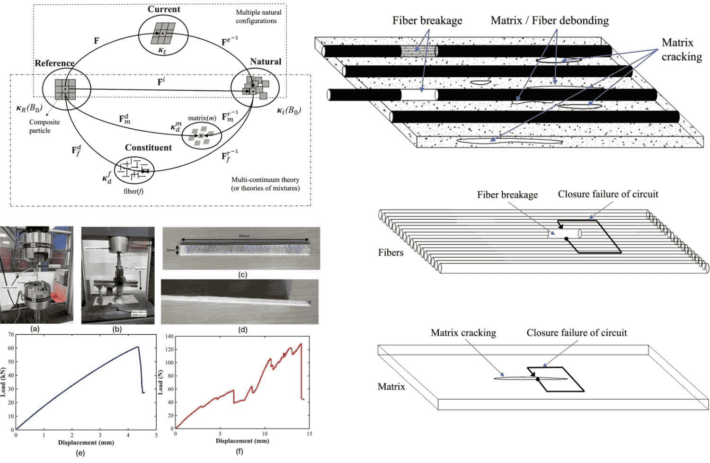

Research Interests
My research endeavors are situated at the intersection of theoretical mechanics, finite deformation kinematics, constitutive modeling, and experimental mechanics of advanced composite materials. The principal objective of my work is the rigorous characterization of nonlinear deformation and damage evolution in fiber-reinforced laminated composites subjected to finite strain regimes. My investigations integrate multicontinuum theory, differential geometric formulations, computational mechanics, and experimentally validated constitutive frameworks to establish robust predictive methodologies for advanced composite systems.

Core Themes of My Research
Advanced mechanics-based formulations for deformation, incompatibility, and damage evolution in composite systems.

Finite Deformation Mechanics
My research in finite deformation mechanics is founded upon the multicontinuum theory proposed by Bedford and Stern, together with the theory of multiple natural configurations developed by Rajagopal and Srinivasa. The framework employs multiplicative decomposition of the deformation gradient to characterize constituent-level distortions associated with matrix deformation, fiber deformation, and irreversible damage evolution.
\[ \mathbf{F}=\mathbf{F}^{e}\mathbf{F}^{r}_{\alpha}\mathbf{F}^{d}_{\alpha} \]
Composite Materials
The constitutive framework developed in my work is applicable to both stiff and soft composite systems. Stiff composites include glass-fiber reinforced and carbon-fiber reinforced laminates, whereas soft composites encompass origami-inspired, biological tissue, and compliant fiber-reinforced systems. The generalized nature of the framework permits broad applicability across a wide spectrum of engineered composite materials.

Damage Mechanics
The proposed framework characterizes matrix cracking, fiber breakage, interfacial slip, debonding, and delamination through constituent-level incompatibility measures. Damage evolution is represented through deformation-induced incompatibility tensors and geometric torsion measures.
Experimental Investigation
Experimental investigations are conducted to validate the constitutive and geometric framework. Mechanical characterization includes tensile testing, mixed-mode bending (MMB) tests, and full-field displacement measurements through digital image correlation techniques.
Damage Characterization Equations
Constitutive and geometric measures governing damage evolution in laminated composite systems.
Matrix Cracking
\[ \mathbf{G}_{m}=\frac{1}{J_{m}^{d}}\mathbf{F}_{m}^{d}(\mathrm{Curl}\,\mathbf{F}_{m}^{d}) \]Fiber Breakage
\[ \mathbf{G}_{f}=\frac{1}{J_{f}^{d}}\mathbf{F}_{f}^{d}(\mathrm{Curl}\,\mathbf{F}_{f}^{d}) \]Interfacial Slip & Debonding
\[ \lambda_{m}=\mathbf{F}^{d}_{m}\mathbf{V}_{rel}=\mathbf{v}^{d}_{m}-\mathbf{F}^{d}_{m}\mathbf{F}^{d-1}_{f}\mathbf{v}^{d}_{f} \]Delamination
\[ \tilde{\Sigma}=\llbracket \mathbf{F}^{l}\rrbracket \]Geometric Interpretation of Incompatibility
Differential geometric measures associated with incompatibility and configurational torsion.
Matrix Configuration
\[ T^{D}_{mAB}=\frac{1}{2}(\Gamma^{D}_{BA}-\Gamma^{D}_{AB})=\frac{1}{2}\mathbf{F}^{d-1}_{m}(\partial_{B}\mathbf{F}^{d}_{mA}-\partial_{A}\mathbf{F}^{d}_{mB}) \]Fiber Configuration
\[ T^{D}_{fAB}=\frac{1}{2}(\Gamma^{D}_{BA}-\Gamma^{D}_{AB})=\frac{1}{2}\mathbf{F}^{d-1}_{f}(\partial_{B}\mathbf{F}^{d}_{fA}-\partial_{A}\mathbf{F}^{d}_{fB}) \]Interface Contribution
\[ T^{D}_{IAB}=\frac{1}{2}(\mathbf{F}^{l-1})\Delta S_{R}(n_{B}[F^{l}]^{a}_{A}-n_{A}[F^{l}]^{a}_{B}) \]Total Torsion
\[ T^{D}_{AB}=h_{\xi}T^{D}_{\xi AB}+h_{\eta}T^{D}_{\eta AB}+T^{D}_{IAB} \]Research Activities
Completed DST-SERB Project
Assessment and modeling of damage in fiber reinforced laminated composites for large deformation processes using multicontinuum theory and experiments. The project integrated constitutive modeling, computational mechanics, and experimental validation.
Currently Working On
Current investigations focus on microfiber buckling phenomena in advanced composite systems under finite deformation loading conditions. The work combines theoretical stability analysis, nonlinear computational mechanics, and experimental characterization.
Open for Collaboration
I am actively interested in collaborative research involving continuum mechanics, constitutive modeling, finite deformation, composite materials, and experimental mechanics.